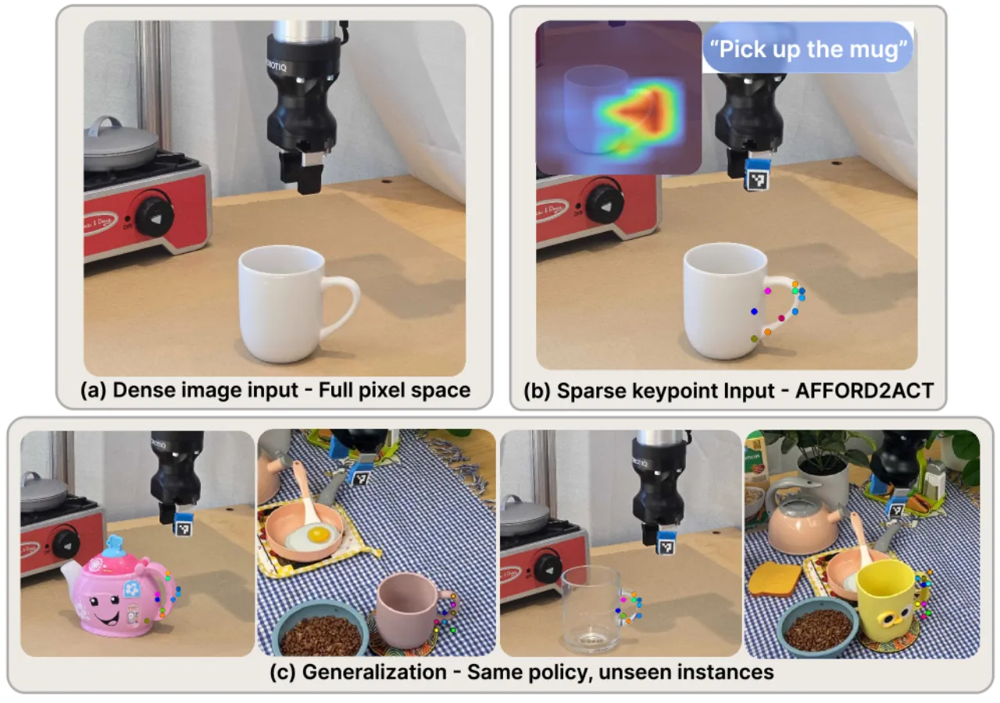
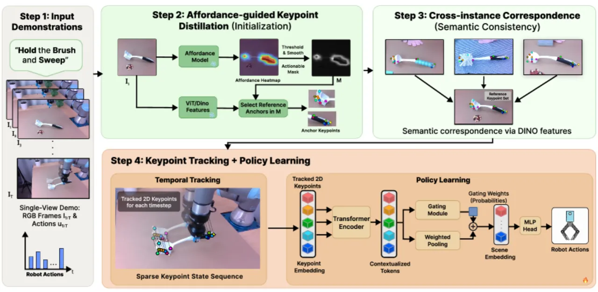
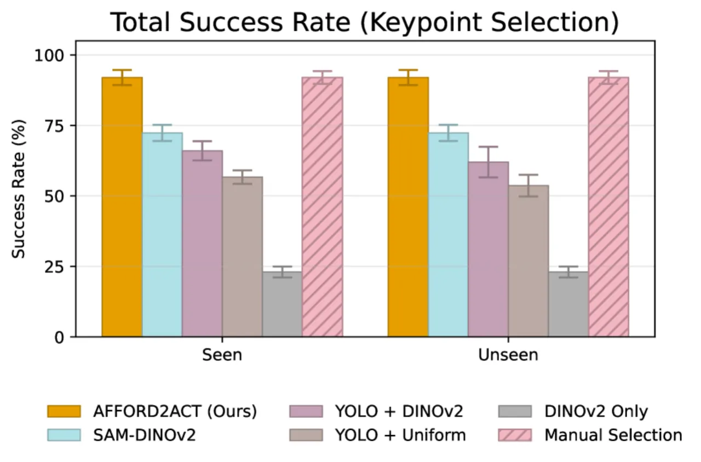
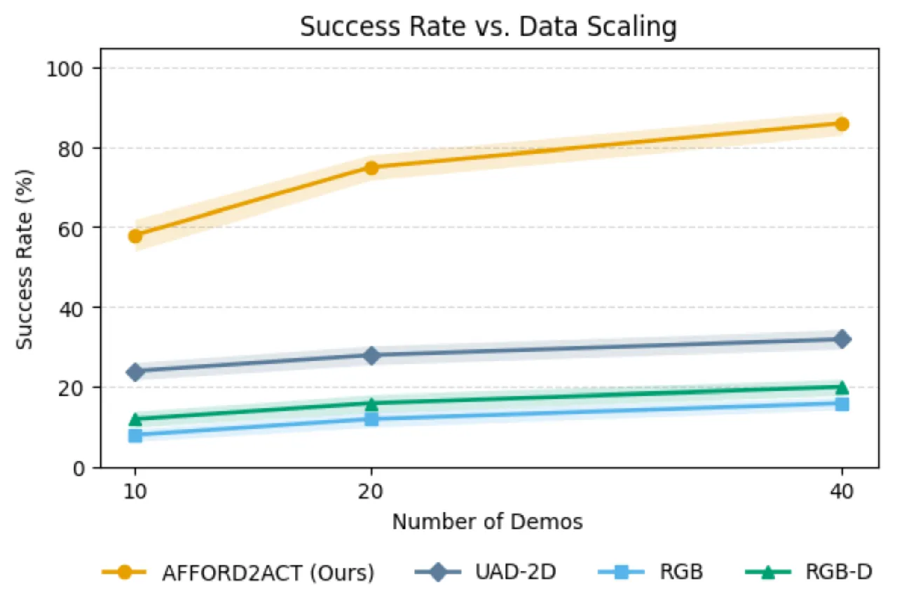
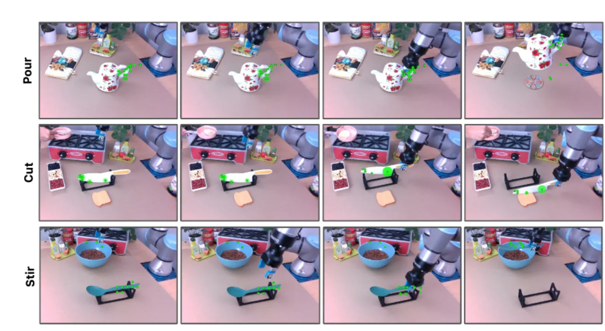

密集视觉输入把「任务相关线索」和「背景/光照/外观」这些无关变化纠缠在一起，难以泛化。Afford2Act 用语言条件的 affordance 先验先定位「该在哪里交互」，自动蒸馏出一小组（K=19）语义 2D keypoints 作为紧凑状态表示，再用一个轻量的 attention + gating 策略动态挑选当前最关键的点来控制。单视角 RGB、每任务仅 40 条示教，对 held-out 物体达到 82% 成功率。
学习机器人操作策略的核心是一个表示问题：如何抽取既紧凑又有表达力的操作相关特征？图像 / 点云 / 稠密语义特征细节丰富，但会给策略塞进大量无关信息、易过拟合到单一环境；2D keypoints 稀疏、只保留物体的关键特征，支持轻量策略与实时推理。真正的难点在于：如何自动而可靠地发现这些 keypoints——选太少或选错会丢失关键信息，靠人工挑选又难以跨任务、跨物体扩展。
"We present Afford2Act, which uses language-conditioned affordance priors to localize where interaction should occur and extract a small set of semantic 2D keypoints that capture functionally relevant object parts."

整个 keypoint 蒸馏分四步、全自动、无需人工标注，且预训练的 affordance 与 correspondence 模块只在第一帧运行一次；随后策略只在稀疏 2D keypoint 轨迹上训练，因此非常轻量、数据高效。

给定示教首帧 I₁ 与 affordance prompt A，用预训练的 One-Shot Open Affordance 模型 产生热图 H = f_aff(I₁, A) ∈ [0,1]^{H×W}；再用一个鲁棒的 quantile 阈值（配合轻度平滑）得到二值 mask M。该 mask 能捕捉刀刃、杯沿这类细结构，并稳健地滤掉杂乱背景。
在 reference 帧上用 DINO backbone 计算稠密特征（part-sensitive，利于可靠的跨实例对应），仅在 affordance mask 的 ROI 内聚类，得到 K 个 reference anchor 点。面对新示教时，对每个 anchor 在新帧 ROI 内按 cosine similarity 取最佳匹配位置及置信度——保证索引 i 始终指向同一「功能部件」（如 "handle tip"），即便物体几何与外观变化；把匹配限制在 affordance mask 内，也减少了匹配到视觉相似但任务无关区域的错误。
首帧初始化 K 个点后，用基于 transformer 的 point tracker（CoTracker）沿整段示教联合跟踪。联合跟踪利用 keypoint 间的相关性提升对遮挡的鲁棒性（如抓取时夹爪挡住 handle），并保持索引一致。每段示教最终表示为一条 K 个「任务相关、instruction-conditioned」keypoints 的轨迹。
每一步把 K 个 keypoints 各嵌入成 token，经 Transformer encoder 得到上下文化特征（让「刀刃上的点」与「手柄上的点」被区别对待）。关键是引入一个 gating network g_θ：对每个 token 打非负重要性分并 softmax 归一，从而下调任务无关 keypoints 的权重——把「候选生成」和「相关性估计」显式分离。加权聚合得到紧凑场景嵌入 h_t，经共享 MLP 分成两个线性头，分别预测末端 delta 动作与夹爪指令。
硬件为 UR3e 机械臂 + 侧装 RealSense D435i 单相机。围绕 6 个 affordance（hold / cut_with / sweep / pour / stir / kick）实例化成 6 个操作任务（抓取-举起、切、扫、倒、搅、踢球）。每任务用 40 条遥操作示教训练一个独立策略，在 20 个真实回合上评测，seen / unseen 分开报告。所有 keypoint-selection 对比都用相同下游策略结构、固定 K=19，以隔离「表示质量」而非「控制器容量」。
与多种 keypoint 选择策略对比（同为 K=19、同一下游策略）：YOLO+DINO、YOLO+Uniform Grid、DINO Only、SAM+DINO，以及人工挑选的 Hand-Picked (P3PO-style)。结论：依赖 YOLO 检测的方法对未见类别泛化提升有限——因为它们依赖已知类别标签（总在找「cup」），几何一变（如遇到 teapot）就失灵，杂乱场景中框不准时也会退化。Afford2Act 不依赖物体标签，直接经 affordance 模型识别「交互热点」；人工挑选基线是「语义化稀疏 keypoints」的上界参考，而 Afford2Act 无需逐任务指定点即可达到可比性能。

与三个稠密输入基线对比：RGB-BC（ResNet-18 + MLP，原始 RGB）、RGB-D-BC（4 通道 RGB-D）、UAD-2D-BC（输入换成 UAD 生成的 affordance mask）。还试了 Pi0 基础模型——在本设置下无一成功：Pi0 依赖额外的腕部视角、且训练分布中不含 UR3e 本体，与本文单外部相机的假设不匹配。结果：keypoint 策略持续优于 RGB / RGB-D，尤其在未见物体上（稠密像素输入易过拟合单一环境）；UAD 因高维表示在少量示教下表现不足。语义轨迹评分（rubric）还显示 RGB / RGB-D BC 会「先做倒/切的末端动作再抓」，动作顺序混乱，而 keypoint 策略通常能到达最终子目标，仅偶有最后一步滑落。

沿四个维度评估分布迁移：① 同类未见实例；② 共享功能部件的新类别（如用 spatula 代替 spoon 搅拌）；③ 场景变化（背景/光照）；④ 干扰物（额外物体、旁边走动的人）。keypoint 策略对同类未见实例迁移很强，对若干新类别也能迁移（尤其当功能部件相似时），背景变化与杂乱环境下依然鲁棒——一个极端例子：训练用来举 mug 的策略，在严重杂乱场景中成功举起了 teapot，pipeline 仍能定位到正确的交互 keypoints。

| 消融 / 设置 | 成功率 | 说明 |
|---|---|---|
| 完整模型（含 gating） | 86% | overall success rate |
| 去掉 gating（等权） | 52% | 杂乱场景下退化尤其明显 |
| Stir 任务 · Two-Stage Re-Anchoring | 90% | VLM 检测抓取完成后更新 prompt、重锚点 |
Language Prompt 鲁棒性：同义或相近措辞（"brush_with" 换 "sweep"、"mix" 换 "stir"）产生几乎一致的 affordance 预测。Effective Keypoint Count：定义 K_eff = 1 / Σ w_i²，实测 K_eff 通常远小于 K=19，说明 gating 在任意时刻只关注一小部分 keypoints。多阶段：在天然多阶段的 Stir 任务上，用 VLM 触发相位切换 + 在线重锚，成功率达 90%，展示了 online keypoint refresh 对多阶段操作的潜力。
因为 keypoint 蒸馏以预测的 actionable region 为条件，mask 有误就可能漏掉真正的接触区或混入干扰物，导致 keypoints 不稳、控制出错（Fig. 11 中夹爪与 spatula 碰撞的例子即由弱 affordance masking 引起）。
单一 RGB 视角下的严重遮挡或视角歧义，会破坏 affordance 定位与跟踪，即便该行为本身是可行的。作者指出这些失败主要反映感知可靠性而非 keypoint 策略设计本身。
confidence-aware filtering、轻量 re-anchoring、以及 occlusion / mask-noise 数据增强；更进一步是让 keypoint 表示随场景演变在线更新，结合轻量任务规划与置信度感知重采样，以提升长时程执行下（尤其可见性或接触变化时）的适应性。